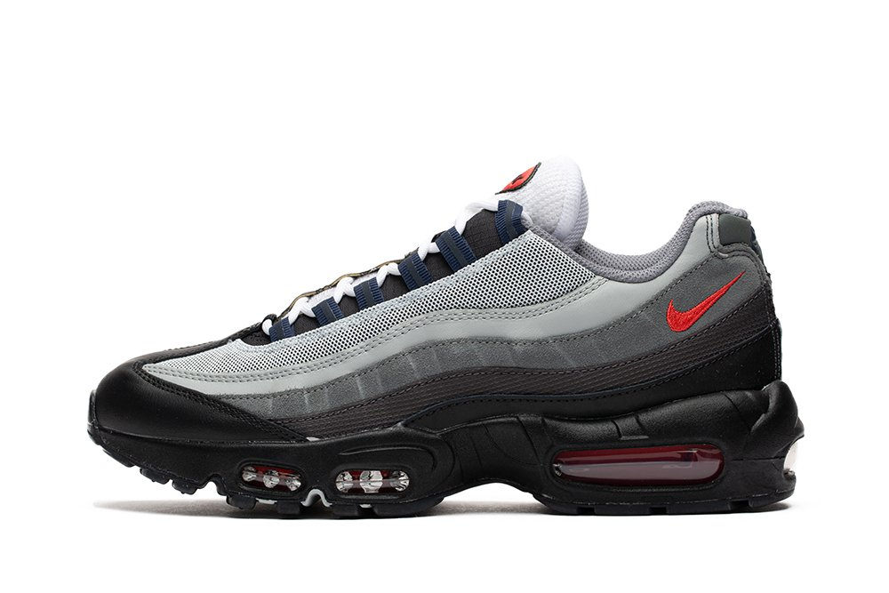
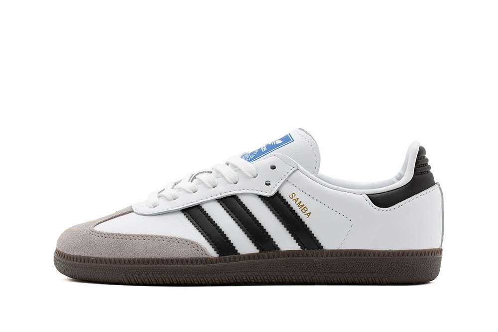

Best items
 At first, the latest Air Max design hit resistance within Nike. It was unusual looking and featured the first-ever visible forefoot Air. Some loved the black midsole — the first time it was ever used in Nike running footwear — while others hated it. Which to designer Sergio Lozano, meant he was on to something. The design was inspired by two distinct ideas. First, by the idea of a shoe that was created by nature, in which the layers of soil were eroded by rain, revealing the product. The second piece of inspiration was the complexity of the human body: the shank along the shoe’s outsole and heel represents the spine, serving as the backbone of the design. Nylon eyelets represent the ribs, and the lacing structure up the sides — layered with mesh — represents muscle fibers and flesh.
 If you’re looking for a pair of sneakers that’ll ensure you make a statement, look no further than a pair of TNs. Forming an essential part of Nike’s Air Max legacy, the TN (aka the Air Max Plus) has been a street staple for years, but that’s a far cry from the original palm trees and sunset skies that inspired the silhouette. In fact, the TN has a few surprising facts behind it, so sit tight while we give you a quick little history lesson on the fan-fave sneaker. The original Nike Air Max Plus Tuned 1 was designed in 1998 by Sean McDowell, but the silhouette came about from a 1997 project named Sky Air, that Nike was working on with none other than Foot Locker. The idea was to create a new running shoe that would use Tuned Air technology – the latest in a long line of innovations from the Air Max family. Nike had presented over 15 proposals to Foot Locker before McDowell’s design won them over, but the process wasn't all smooth sailing.
If you’re looking for a pair of sneakers that’ll ensure you make a statement, look no further than a pair of TNs. Forming an essential part of Nike’s Air Max legacy, the TN (aka the Air Max Plus) has been a street staple for years, but that’s a far cry from the original palm trees and sunset skies that inspired the silhouette. In fact, the TN has a few surprising facts behind it, so sit tight while we give you a quick little history lesson on the fan-fave sneaker. The original Nike Air Max Plus Tuned 1 was designed in 1998 by Sean McDowell, but the silhouette came about from a 1997 project named Sky Air, that Nike was working on with none other than Foot Locker. The idea was to create a new running shoe that would use Tuned Air technology – the latest in a long line of innovations from the Air Max family. Nike had presented over 15 proposals to Foot Locker before McDowell’s design won them over, but the process wasn't all smooth sailing.
 The adidas Originals Samba shoe is an iconic style that has captivated the hearts of global communities for over 50 years. Contrary to popular belief, the Samba was not initially created for the World Cup or directly inspired by the Brazilian dance form. Instead, it emerged from a football game in 1950s Germany, where its exceptional performance on icy pitches earned it the nickname "Samba." As we delve into the history of the Samba shoe, we discover the dedication to innovation and style and the communities that helped define this silhouette as a true Originals icon.